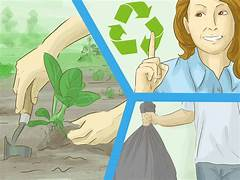

>Human activities are the main villain that harms nature. Earlier, it was not evident the dangerous effects of human exploitation on nature. When we think that we have only cut down a single tree, which might not damage nature, remember that there would be hundreds of others who think like you. So, one tree becomes hundreds, thousands and millions. At this pace, nature will soon exhaust its resources, and we will be suffering from various natural disasters and diseases. To put it simply, our mere existence would be threatened.This is why we need to preserve nature.In this how to save nature essay, we explore a few ways to coexist with nature.
Trees save energy and release oxygen that keeps the air clean.
If you have the means (and the yard space), plant a few trees on your property.
Look for a variety that’s native to your area and help it grow by following the care instructions for that type of tree.
Trees are crucial and also they provide over 70% of the world's oxygen to the environment, and they reduce the effects of global warming and climate change
Find alternate forms of transportation that consume less (or no) gasoline.
Walk or ride a bike whenever possible; they won’t cause any pollution or consume natural resources.
If that isn’t an option, consider organizing carpools or using public transportation.
Replacing car trips with public transport reduces road congestion and the overall amount of gasoline you use, cutting back your carbon footprint.
Volunteer work has a direct positive impact on your area’s environment.
You can volunteer to pick up litter, plant community gardens, or clean up rivers.
Find an activity that suits your interests and set aside time to help regularly! Plus, consider joining an environmental organization like Greenpeace, the Sierra Club, or the Environmental Defense Fund.